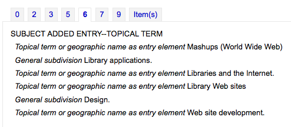
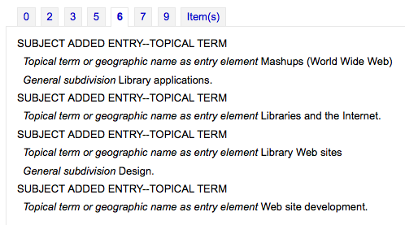

编目
在这里： 更多 > 管理 > 全局系统参数 > 编目
显示
AcquisitionDetails
Asks: ___ acquisition details on the bibliographic record detail page.
默认值：Show
值:
不显示
Show
说明：
This system preference controls whether a tab will show on the detail page in the staff interface that includes detailed acquisitions information for the title. This tab will include links to order information stored in the acquisitions module.

hide_marc
詢問：於 MARC 檢視時 ___ MARC 欄號、分欄代碼及指標。
默认值：Show
值:
不显示
Show
说明：
This system preference can be used to hide the MARC tag numbers and indicators in the staff interface and OPAC MARC views.
When set to ‘Show’, the MARC view of a bibliographic record will display the MARC field numbers and indicators.
In the MARC view of the staff interface:
In the MARC view of the OPAC:
When set to “Don’t show”, the MARC view of a bibliographic record will only display the field name.
In the MARC view of the staff interface:
In the MARC view of the OPAC:
备注
Contrary to the description, the subfield codes are not affected by this system preference.
备注
This system preference only affects the bibliographic record display.
IntranetBiblioDefaultView
預設值：ISBD 格式
Asks: By default, display bibliographic records in ___
值:
ISBD form – displays records in the staff interface in the old card catalog format
See ISBD preference for more information
Labelled MARC form – displays records in the staff interface in MARC with text labels to explain the different fields
MARC form – displays records in the staff interface in MARC
normal form – visual display in the staff interface (for the average person)
说明：
This setting determines the bibliographic record display when searching the catalog on the staff interface. This setting does not affect the display in the OPAC which is changed using the BiblioDefaultView preference under the OPAC preference tab. This setting changes the look of the record when first displayed. The MARC and ISBD views can still be seen by clicking in the sidebar.
ISBD
預設：見共筆的`ISBD 檢視組態 <https://wiki.koha-community.org/wiki/ISBD_view_configuration>`。
詢問：使用以下的 ISBD 模版：
说明：
此設定決定 ISBD 資訊的顯示方式。在此清單內的元素可以用不同的 ISBD 方式呈現。ISBD 全稱是 International Standard Bibliographic Description 譯名是國際書目著錄標準，1969年由國際圖書館協會聯合會 (International Federation of Library Associations, IFLA) 首次發佈做為敘述編目的指南。ISBD 的目的是協助不同類型的書目資料在國際間交換。
LabelMARCView
預設值：不要
詢問：___ 收折重複的欄位。
值:
要 – 在 OPAC 與館員介面的 MARC 檢視時，把相同欄號收在一起

不要 – 在 OPAC 與館員介面的 MARC 檢視時，列出每個欄號

MARCFieldDocURL
預設值：空白
詢問：以 ___ 做為 MARC 欄位文件的 URL。可能的取代是 {MARC} (如，”MARC21” 或 “UNIMARC”)、{FIELD} (如，”000” 或 “048”)、{LANG} (如，”zh_TW” 或 “fi-FI”)。若空白，則使用 http://loc.gov (MARC21) 或 http://archive.ifla.org (UNIMARC)。如 http://fielddoc.example.com/?marc={MARC}&field={FIELD}&language={LANG}
说明：
This system preference lets you choose the source of the MARC documentation available through the “?” next to MARC fields.
MergeReportFields
詢問：___ 欄位顯示合併後刪除的記錄
说明：
合併完成後可收取合併過程的報表，此偏好讓您設定此報表的預設值。
例如：’001,245ab,600’ 顯示為：
001 的值
欄位 245 的分欄 A 和 B
欄段 600 的所有分欄
NotesToHide
詢問：不要顯示這些 ___ 附註欄位，於題名附註區隔符號 (OPAC 記錄詳情) 與在敘述區隔符號 (館員介面記錄詳情)。
说明：
This system preference lets you define which of your note fields are hidden from the title notes (OPAC) and descriptions (Staff) tabs. Enter the values as a comma separated list. For example to hide the local note and the bibliography note in MARC21 enter 504, 590.
OpacSuppression、OpacSuppressionByIPRange、OpacSuppressionRedirect 與 OpacSuppressionMessage
OpacSuppression
詢問：___ 從 OPAC 搜尋結果中標記為禁止顯示的書目記錄。
預設值：不隱藏
值:
不要隱藏
將在 OPAC 搜尋結果顯示紀錄若被標示為隱藏
隱藏
將在 OPAC 搜尋結果顯示紀錄若被標示為隱藏
说明：
This system preference controls hiding of bibliographic records in the OPAC. Enter “1” in the field mapped to the suppress index (942$n in MARC21, no official field in UNIMARC) in each bibliographic record you want to hide from the OPAC. The indexer then hides it from display in OPAC but will still display it in the staff interface.
备注
應該為MARC21的942$n欄段（或相應的UNIMARC欄段）設置一個 容許值，以消除錯誤。你可以使用YES_NO容許值類別，或者建立一個名為SUPPRESS的新類別，例如，數值為0表示不抑制，1表示抑制。
警告
若此偏好設為 ‘隱藏’ 且將 942$n 欄位設為 1，則隱藏整個書目記錄，不只是個別的館藏。
备注
不顯示的記錄在館員介面有個說明，指出該記錄不顯示在 OPAC。

This note can be styled by using the IntranetUserCSS preference to stand out more if you’d like.

Fot the example above, the following snippet was added to IntranetUserCSS
.suppressed_opac {
font-size: larger;
color: red;
}
OpacSuppressionByIPRange
要求：限制對IP範圍以外的IP地址進行抑制 ___（如果不使用，請留空。 定義一個範圍，如192.168..）
说明：
如果你想進一步控制抑制，你可以設置一個IP地址範圍，以便顯示被抑制的館藏。定義一個範圍，如192.168.. 如果你不想以這種方式限制壓制，請將IP欄位留空。
OpacSuppressionRedirect
詢問：將禁止記錄的 opac 詳細訊息頁面重新定向到 ___
值:
404 錯誤頁面 (‘找不到’)。
解釋頁面 (‘此紀錄被禁止’)。
預設值:解釋頁面 (‘此紀錄被禁止’)
说明：
This system preference lets you decide what the patrons will see in the OPAC when a record is suppressed. You can either show the patron a 404 error page or an explanatory page when they try to see a suppressed record. You can change the message of the explanatory page with the OpacSuppressionMessage system preference.
OpacSuppressionMessage
詢問：在重新定向頁面上顯示以下消息，用於禁止顯示的書目記錄 ___。
说明：
如果你選擇在讀者試圖訪問被壓制的書目記錄時顯示一個解釋頁，你可以用HTML來定制訊息。
ShowComponentRecords, MaxComponentRecords, ComponentSortField, and ComponentSortOrder
These preferences determine whether or not children records, or component records, are displayed in the host record’s detail page.
This is especially useful for cataloging music, but it can be used in any situation where there is a host record, such a cataloging serials or kits.
ShowComponentRecords
Asks: Show a list of component records, as linked via field 773, in ___ record detail pages.
Default: no
值:
both staff interface and OPAC
no
OPAC
staff interface
说明：
This is the main switch for the display of component records.
If set to ‘no’, the display is disabled.
If set to ‘staff interface’ (or ‘both staff interface and OPAC’), the component records will appear in the host record’s detail page in the staff interface, under the ‘Components’ tab.
If set to ‘OPAC’ (or ‘both staff interface and OPAC’), the component records will appear in the host record’s detail page in the OPAC, under the ‘Components’ tab.
Components to be displayed are found using the host record’s control number (001) in the child record’s 773$w subfield, regardless of the UseControlNumber system preference.
For example, the host record is
001 4379599 003 FI-BTJ 245 00 ‡aEasy piano pieces for children.
The component record is
001 4401194 003 FI-BTJ 100 1/ ‡aVivaldi, Antonio. 245 10 ‡aAutumn : ‡bfrom The four seasons. 773 0/ ‡w4379599 ‡tEasy piano pieces for children773$w must contain the control number of the host record, with or without the control number identifier.
Both of these will work
773 0/ ‡w4379599
or
773 0/ ‡w(FI-BTJ)4379599
警告
This feature only works with MARC21. UNIMARC is not supported at this time.
警告
This system preference does not work with EasyAnalyticalRecords.
警告
This system preference does not work with UseControlNumber.
MaxComponentRecords
Asks: A maximum of ___ records will be displayed.
Default: 300
说明：
This system preference determines how many component records are displayed in the ‘Components’ tab, both in the staff interface and in the OPAC.
If the host record has more components than the system preference dictates, there will be a link at the end to display the remaining records.
ComponentSortField
Asks: By default, sort component results in the staff interface by ___, (ComponentSortOrder).
Default: title
值:
date added
author
biblionumber
call number
date of publication
title
说明：
This system preference, along with ComponentSortOrder, determines how the component records are sorted in the ‘Components’ tab.
ComponentSortOrder
Asks: By default, sort component results in the staff interface by (ComponentSortField), ___.
Default: ascending
值:
ascending
descending
说明：
This system preference, along with ComponentSortField, determines how the component records are sorted in the ‘Components’ tab.
SeparateHoldings 與 SeparateHoldingsBranch
SeparateHoldings 預設值：不區隔
SeparateHoldingsBranch 預設值：所屬圖書館
詢問：___ 館藏顯示為兩個分頁，第一分頁包括館藏是 ___ 登入讀者的圖書館。第二分頁將包括所有的其他館藏。
SeparateHoldings 值：
不區隔
區隔
SeparateHoldingsBranch 值：
預約圖書館
預約圖書館
说明：
This system preference lets you decide if you would like to have the holding information on the bibliographic detail page in the staff interface split in to multiple tabs. The default is to show all holdings on one tab.

URLLinkText
預設值：線上資源
詢問：顯示 ___ 做為 MARC 記錄嵌入的連結文字。
说明：
若 856 欄位沒有分欄 3 或 y，OPAC 將顯示 ‘按此進入線上資源。^在此鍵入此欄位的其他內容。
UseControlNumber
預設值：不用
詢問：___ 以書目控制號碼 (分欄 $w) 及控制碼 (001) 連結書目記錄。
值:
不使用
在詳情顯示頁面點選題名旁的 ‘繼續’ 與 ‘續自’ 連結時，Koha 將執行題名搜尋
使用
在詳情顯示頁面點選題名旁的 ‘繼續’ 與 ‘續自’ 連結時，Koha 將執行控制碼 (MARC 欄位 001) 搜尋
重要
Unless you are going in and manually changing 773$w to match your rigorously-defined bibliographic relationships, you should set this preference to “Don’t use” and instead set EasyAnalyticalRecords to “Display”
说明：
假設有個期刊 “Journal of Interesting Things”，舊名為 “Transactions of the Interesting Stuff Society”，各有獨立的書目記錄，可加入連結欄位，展現兩者的關係。UseControlNumber 允許使用在地的近用編號。在 MARC21 裡，兩者的關係如：
=001 12345 =110 2_$aInteresting Stuff Society. =245 10$aTransactions of the Interesting Stuff Society. =785 00$aInteresting Stuff Society$tJournal of Interesting Things.$w12346 =001 12346 =110 2_$aInteresting Stuff Society. =245 10$aJournal of Interesting Things. =780 00$aInteresting Stuff Society$tTransactions of the Interesting Stuff Society.$w12345
將 UseControlNumber 設為 ‘使用’，78x 連結將使用的控制碼是分欄 $w，而不是執行 “Journal of Interesting Things” 與 “Transactions of the Interesting Stuff Society” 的題名搜尋。
备注
You can use the autoControlNumber system preference to automatically fill 001 with the biblionumber of the record.
匯出
BibtexExportAdditionalFields
詢問：匯出 BibTeX 格式時，使用以下的欄位
说明：
在 BT_TAG: TAG$SUBFIELD (如 美國國會圖書館控制號碼: 010$a ) 裡每個欄號佔一列
採用以下的格式：BT_TAG: [TAG2$SUBFIELD1, TAG2$SUBFIELD2] (如說明：[501$a, 505$g])，於做為重複 BibTeX 標籤的多個 marc 欄號/分欄目標
重複欄位與分欄的值都將與指定的 BibTex 欄號列印在一起。
使用 ^@^ (含引號) 做為 BT_TAG 取代 bibtex 記錄類型包括選定的欄位值。
警告
需要YAML語法才能運行
這表示
確保欄位名和冒號之間沒有空格
確認在第一個值與冒號之間，存在一個空格
如果同一欄位有多個數值，請將它們放在方格內，用逗號和空格隔開
確認每組都在同一列中
RisExportAdditionalFields
詢問：匯出 RIS 格式時，使用以下的欄位
说明：
在 RIS_TAG: TAG$SUBFIELD (如 LC: 010$a) 內每個欄位佔一列
指定多個 marc 欄位/分欄做為重複 RIS 欄號的標的，使用以下的格式：RIS_TAG: [TAG2$SUBFIELD1, TAG2$SUBFIELD2] (如 NT: [501$a, 505$g])
重複欄位與分欄的值都將與指定的 RIS 欄號列印在一起。
以 TY (記錄類型) 做為鍵值將以選定的欄位值 取代 預設的 TY。
警告
需要YAML語法才能運行
這表示
確保欄位名和冒號之間沒有空格
確認在第一個值與冒號之間，存在一個空格
如果同一欄位有多個數值，請將它們放在方格內，用逗號和空格隔開
確認每組都在同一列中
需要YAML語法才能運行
匯入
AdditionalFieldsInZ3950ResultSearch
詢問：顯示 MARC 欄位/分欄 ___ 於 Z39.50 搜尋結果 (以逗點為區隔符號如：”001, 082$ab, 090$ab”) 的 ‘其他欄位’。
说明：
This system preference lets you define additional fields and subfields to display on the Z39.50 result list.
AggressiveMatchOnISBN
預設值：不使用
詢問：對映 ISBN 與匯入記錄工具時，在匯入記錄的 ISBN 欄位內 ___ 變通地對映 ISBN 的各種變形。
值:
要
不要
说明：
This system preference allows you to choose to alter the ISBN matching rule used when staging records for import to be more aggressive. This means that all text will be stripped from the ISBN field so that a pure number match is possible. If this preference is set to “Don’t” then Koha will find a match only if the ISBN fields are identical.
AggressiveMatchOnISSN
預設值：不使用
詢問：對映 ISSN 與匯入記錄工具時，在匯入記錄的 ISSN 欄位內 ___ 變通地對映 ISSNs 的各種變形。
介面
advancedMARCeditor
詢問：___ MARC 編輯器裡的欄位及分欄說明。
默认值：Show
值:
不显示
Show
说明：
This system preference determines whether or not MARC field names will be present when editing or creating MARC records.
When set to ‘Show’, the field and subfield names appear next to the field and subfield numbers and codes.

When set to “Don’t show”, only the field numbers and subfield codes are displayed.
CatalogConcerns
Asks: ___ staff to report concerns about catalog records.
值:
Allow
Don’t allow
Default: Don’t allow
说明：
This system preference is used to turn on the concern reporting feature in the staff interface.
When set to ‘Allow’ staff members can create concern tickets.
See also:
CatalogerEmails
Asks: Use ___ as the notification address for catalog concerns.
Default: empty
说明：
This system preference is used to define to which email address new catalog concerns should be sent.
You can input more than one email address by separating them with commas.
If left empty, no email will be sent.
The email sent is the TICKET_NOTIFY notice, which can be customized in the Notices and slips tool.
See also:
DefaultClassificationSource
預設值：杜威十進分類法
詢問：使用 ___ 做為預設分類法來源。
值:
ANSCR (錄音資料)
杜威十進分類法
美國國會圖書館分類法
其他/通用分類法
SuDoc 分類法 (美國官書局)
國際十進分類法
說明
在 管理 > 分類法來源 新增分類法使其顯示在表單內。
DefaultSaveRecordFileID
要求：當在高級編目編輯器中保存MARC/MARCXML文件或從館員介面的詳細頁面匯出時，在文件名中使用 ___。
預設值：書目記錄號
值:
書目記錄控制號碼
控制號
说明：
This system preference determines what is the default file name that is used when downloading a MARC record.
選擇 ‘書目記錄號’ 將產生一個文件名，如bib-123456.mrc，其中123456是書目號。
選擇 ‘控制號’ 會產生一個檔案名，如record-123456.mrc，其中123456是記錄控制號（在MARC21中，這是001欄位）。
EasyAnalyticalRecords
Asks: ___ easy ways to create analytical record relationships.
Default: Don’t show
值:
不显示
Show
说明：
An analytic entry in a catalog is one that describes a part of a larger work that is also described in the catalog. In bibliographic cataloging, analytic entries may be made for chapters in books or special issues of articles in periodicals. In archival cataloging, analytic entries may be made for series or items within a collection. This feature in Koha allows for an easy way of linking analytic entries to the host records, and this system preference adds several new menu options to the staff cataloging detail pages to allow that to happen.
警告
If you decide to use this feature, make sure that the UseControlNumber system preference is set to “Don’t use”. Otherwise, the “Show analytics” links in the staff interface and the OPAC will be broken.
EnableAdvancedCatalogingEditor
預設值：不啟用
詢問：___ 進階編目編輯器。
说明：
This system preference will allow you to choose between a basic editor and a advanced editor for cataloging.
說明
此功能不支援 UNIMARC 或 NORMARC 的固長欄位。
Record structure
AlternateHoldingsField 與 AlternateHoldingsSeparator
詢問：顯示 MARC 分欄 ___ 做為無館藏資訊的書目記錄，這些分欄以 ___ 區隔。
说明：
某些圖書館把不打算流通的館藏資訊匯入 852 欄位 (OCLC 的館藏資訊欄位)，而不是 952 欄位(Koha 的館藏資訊欄位)。852 欄位有資料時，應顯示之，此偏好讓圖書館選擇以 952 欄位的內容當成館藏資訊。AlternateHoldingsField 偏好可以包括多個分欄，如：852abhi，表示 852 欄位的分欄 a、b、h 與 i。
當 AlternateHoldingsField 設為 852abhi，且 AlternateHoldingsSeparator 設為空白，其館藏資訊當如是：

ApplyFrameworkDefaults
Asks: Apply framework default values ___
Default: when cataloguing new records
值:
[Select all]
when cataloguing new records
when changing the framework while editing the existing record
when editing records as new (duplicating)
when importing a record via z39.50
说明：
This system preference is used to determine when default values as defined in the MARC bibliographic frameworks or the authority frameworks.
If choosing values other than for a new record, the default values will only be filled if the fields are empty. It will not overwrite the existing information.
自動條碼
預設值：以此型式 <branchcode>yymm0001 產生
詢問：條碼是 ___
值:
以此形式 <branchcode>yymm0001 產生
以<year>-0001, <year>-0002的形式生成
以此型式產生1, 2, 3
續增 EAN-13 條碼
未自動產生
说明：
此設定係由 Koha 自動生成條碼 (不是掃瞄事先印好的條碼或人工鍵入條碼)。預設的作為是讓館員點選條碼欄位 (MARC21 是 952$p) 即自動生成事先選定格式的條碼。也可點選外掛程式 (欄位右方的 …) 改變框架內的欄位內容。設定給 952$p 的外掛程式 (若使用 MARC21 或相當的欄位對映至在地 MARC 格式的 items.barcode) 給 barcode_manual.pl 而不是 barcode.pl。編輯框架的詳情見本手冊的 MARC 書目框架 章節。
autoControlNumber
Asks: Control Number (001) is ___.
Default: not generated automatically
值:
generated as biblionumber
未自動產生
说明：
This system preference is used to automatically generate a control number in the MARC field 001.
By default, Koha does not generate a control number for records.
If set to ‘generated as biblionumber’, the control number will be filled with the biblionumber once the record is saved.
This will not affect existing records that already have a value in 001. The existing value will be preserved.
If an existing record has no value in 001, the biblionumber will be added.
When duplicating a record, 001 will not be copied to the new record. The biblionumber will be added to 001 upon saving the new record.
ContentWarningField
Asks: Use MARC field ___ for storing content warnings.
Default: none
说明：
This system preference is used to choose the MARC field that is used to add content warnings to a bibliographic record.
It is recommended to use a local notes field (599 in MARC21 for example).
Make sure to add the field in the MARC bibliographic framework in order to be able to edit it.
Subfield x will not appear in the OPAC. Use it to add non-public notes about the content warning.
Subfield u will be used as the URL for the field. Make sure to add http(s)://. Subfield a (non repeatable) will be used as the text of the URL.
All other subfields will be displayed in order.
DefaultCountryField008
默认值：空白默认为美国的 xxu
詢問：在 MARC21 欄位 008 位址 15-17 填入預設的國家代碼 - 出版地區。___。
说明：
This system preference will allow you to set the country code for your MARC21 008 field by default. If this is left empty it will default to United States (xxu). See the MARC Code List for Countries for additional values for this preference.
說明
This system preference won’t have any effect if your records are in UNIMARC.
DefaultLanguageField008
預設值：空白表示為英文
詢問：在 MARC21 欄位 008 位址 35-37 填入預設的語系 ___。
说明：
This system preference will allow you to set the language for your MARC21 008 field by default. If this is left empty it will default to English (eng). See the MARC Code List for Languages for additional values for this preference.
說明
This system preference won’t have any effect if your records are in UNIMARC.
item-level_itypes
預設值：特定館藏
詢問：使用館藏類型 ___ 做為權威館藏類型 (供流通與罰款規則使用)。
值:
bibliographic record
特定館藏
说明：
This system preference determines whether the item type Koha uses for issuing rules will be an attribute of the bibliographic record or the item record. Most libraries refer to the item record for item types. It also determines if the item type icon appears on the OPAC search results. If you have the preference set to ‘bibliographic record’ then Koha displays the item type icon on the search results to the left of the result info.

itemcallnumber
預設值：082ab
詢問：對眏 MARC 分欄至館藏的索書號。
說明
可以用多個分欄對映，如：082ab，表示用到 082 的分欄 a 與 b。
说明：
此偏好決定自動填入館藏記錄索書號 (952$o) 的內容。其內容為 MARC 的欄號(MARC21 常用 050、082、090、852 等)及分欄，不需使用區隔符號 ($a、$b 應著錄為 ab)。
按優先度包涵幾個MARC欄.例如，082ab，050ab，080ab，090ab在082ab中將優先顯示，如果未填寫082，它將在050ab中顯示，依此類推。
**重要**當輸入多個MARC欄時,用逗號分隔它們,但不要在逗號後放置空格。
例子：
杜威分類法：082ab 或 092ab；美國國會圖書館分類法：050ab 或 090ab；館藏紀錄：852hi
MarcFieldForCreatorId, MarcFieldForCreatorName, MarcFieldForModifierId, MarcFieldForModifierName
要求：在MARC分欄___中儲存記錄的建立者借款號碼，在MARC分欄___中儲存記錄的建立者姓名，在MARC分欄___中儲存記錄的最後修改者借款號碼，在MARC分欄___中儲存記錄的最後修改者姓名，注意：在欄位和分欄之間使用美元符號，如123$a。
说明：
This system preference allows you to define which MARC subfields to use to automatically save the details of the logged in user. You can save details for the record creator and the most recent modifier.
marcflavour
預設值：MARC21
詢問：解讀與儲存 MARC 為 ___ 格式。
值:
MARC21
美國、加拿大、澳洲、紐西蘭、英國、德國等國採用
UNIMARC
法國、義大利、萄葡牙、俄國等國採用
NORMARC
挪威採用
说明：
This system preference defines global MARC style (MARC21, UNIMARC or NORMARC) used for encoding.
重要
改變此設定，不會自動把記錄轉換成指定的 MARC 格式。
MARCOrgCode
預設值：OSt
詢問：填寫 MARC 機構代碼表 ___ 預設為新的 MARC21 記錄 (空白表示不用它)。
说明：
此 MARC 機構代碼表用於辨識圖書館的館藏及其他。
MARC21 代碼的詳情，請見美國國會圖書館的 MARC 機構代碼表 或加拿大的 Canadian 代碼指南 內各圖書館的代碼。
說明
This system preference won’t have any effect if your records are in UNIMARC.
NewItemsDefaultLocation
詢問：新增館藏記錄時，暫記其館藏地為 ___ (應該是地區代碼，空白表示不用它)。
说明：
這允許你為所有新館藏設定一個特定的位置。
確保使用位置代碼，從 :ref:`LOC容許值列表<existing-values-label>`中獲取
You can use the UpdateItemLocationOnCheckin system preference along with this one to update the location upon checkin
PrefillItem
預設值：不會事先填入前個館藏的值。
詢問：新增館藏時 ___
值:
不會事先填入前個館藏的值。
會事先填入前個館藏的值。
说明：
This system preference controls the behavior used when adding new items. Using the options here you can choose to have your next new item prefill with the values used in the last item was added to save time typing values or to have the item form appear completely blank. Using SubfieldsToUseWhenPrefill you can control specifically which fields are prefilled.
StripWhitespaceChars
Asks: ___ leading and trailing whitespace characters (including spaces, tabs, line breaks and carriage returns) and inner newlines from data fields when cataloguing bibliographic and authority records. The leader and control fields will not be affected.
Default: Don’t strip
值:
Don’t strip
Strip
说明：
Sometimes, invisible characters are inadvertently added when copy-pasting data from elsewhere and these can cause data discrepancies, when linking authorities automatically for example.
This system preference is used to automatically remove unwanted invisible characters from fields when cataloging bibliographic records or cataloging authority records.
When set to ‘Strip’, the following characters will be removed automatically
space at the beginning of the field
space at the end of the field
tabulation at the beginning of the field
tabulation at the end of the field
line break or carriage return at the beginning of the field
line break or carriage return within the field
line break of carriage return at the end of the field
备注
Only data fields (fields with subfields) are affected by this system preference. The leader and control fields are not affected as they often must contain spaces.
SubfieldsToAllowForRestrictedBatchmod
問：設定分欄清單為可編輯的容許值當 items_batchmod_restricted 偏好被啟用，以空白區格。___
例子：
UNIMARC: “995$f 995$h 995$j”
MARC21: “952$a 952$b 952$c”
说明：
This system preference lets you define what fields can be edited via the batch item modification tool if the items_batchmod_restricted permission is enabled.
說明
快速新增 FA 框架排除在授權之列。若偏好是空白，則沒有欄位受限。
SubfieldsToAllowForRestrictedEditing
要求：定義一個分欄的列表，當編輯_館藏_受限制的權限被啟用時，這些分欄的編輯被授權，用空格分隔。 ___
例子：
UNIMARC: “995$f 995$h 995$j”
MARC21: “952$a 952$b 952$c”
说明：
This system preference lets you define what fields can be edited via cataloging if the edit_items_restricted permission is enabled
說明
快速新增 (Fast Add, FA) 框架排除在授權之列。若偏好是空白，則沒有欄位受限。
SubfieldsToUseWhenPrefill
詢問：設定分欄清單以預填館藏 ___
重要
各值之間以空格區隔。
说明：
When the PrefillItem preference is set to prefill item values with those from the last added item, this preference can control which fields are prefilled (and which are not). Enter a space separated list of fields that you would like to prefill when adding a new item.
UNIMARCField100Language
預設值：fre
詢問：新增紀錄或外掛欄位時，使用語系 (ISO 690-2) ___ 做為 UNIMARC 欄號 100 的預設語系。
UseOCLCEncodingLevels
Asks: ___ OCLC defined values for MARC encoding level in leader value builder for position 17.
預設值：不顯示
值:
不顯示
显示
说明：
This system preference controls whether or not the OCLC values for encoding levels are shown in the leader value builder.
When set to “Display”, the extra OCLC values are displayed in the drop-down menu in the leader value builder.
Spine labels
SpineLabelAutoPrint
預設值：不使用
詢問：使用快速書標印表機時， ___ 動彈出列印對話窗。
值:
要
不要
SpineLabelFormat
預設值：<itemcallnumber><copynumber>
Asks: Include the following fields on a quick-printed spine label: (Enter in columns from the bibliographic, biblioitems or items tables, surrounded by < and >.)
SpineLabelShowPrintOnBibDetails
Asks: ___ buttons on the bibliographic details page to print item spine labels.
Default: Don’t show
值:
不显示
Show
说明：
If set to ‘Show’, there will be a ‘Print label’ button in the holdings table in the staff interface for each item.

This button opens the Quick spine label creator tool.